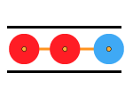

Andrew C. Loheac, Ph.D.
Analytical Consultant, SAS Institute
Computational Physicist, University of North Carolina at Chapel Hill
Peer-Reviewed Publications
A list of publications as well as contributed abstracts and citing articles is available on Google Scholar.
|
Complex Langevin and other approaches to the sign problem in quantum many-body physics Casey E. Berger, Lukas Rammelmüller, Andrew C. Loheac, Florian Ehmann, Jens Braun, and Joaquín E. Drut |
|
|
Finite-temperature equation of state of polarized fermions at unitarity Lukas Rammelmüller, Andrew C. Loheac, Joaquín E. Drut, and Jens Braun |
|
|  |
Polarized fermions in one dimension: density and polarization from complex Langevin calculations, perturbation theory, and the virial expansion Andrew C. Loheac, Jens Braun and Joaquín E. Drut |
|
Third-order perturbative lattice and complex Langevin analyses of the finite-temperature equation of state of non-relativistic fermions in one dimension Andrew C. Loheac and Joaquín E. Drut |
|
|
Thermodynamics of one-dimensional SU(4) and SU(6) fermions with attractive interactions M. D. Hoffman, A. C. Loheac, W. J. Porter, and J. E. Drut |
|
 |
Interaction of Molecular Oxygen with Hexagonally Reconstructed Au (001) Surface Andrew Loheac, Andi Barbour, Vladimir Komanicky, Chenhui Zhu, John Collini, Anthony Ruffino, Yihua Liu, Hoydoo You, and Michael S. Pierce |
|
Thermal equation of state of polarized fermions in one dimension via complex chemical potentials Andrew C. Loheac, Jens Braun, Joaquín E. Drut, and Dietrich Roscher |
|
|
Few-fermion systems in one dimension: Ground- and excited-state energies and contacts L. Rammelmüller, W. J. Porter, A. C. Loheac, and J. E. Drut |
|
|
Universality in one-dimensional fermions at finite temperature: Density, pressure, compressibility, and contact M. D. Hoffman, P. D. Javernick, A. C. Loheac, W. J. Porter, E. R. Anderson, and J. E. Drut |
Dissertation
|
Computational Techniques to Address the Sign Problem in Non-Relativistic Quantum Thermodynamics |
Conference Proceedings
|
Equation of state of non-relativistic matter from automated perturbation theory and complex Langevin Andrew C. Loheac, Jens Braun, and Joaquín E. Drut |
Errata
Minor corrections (which do not impact scientific results) to the above publications may be viewed here.